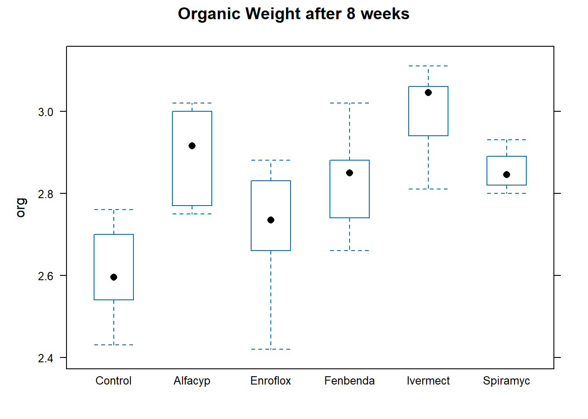
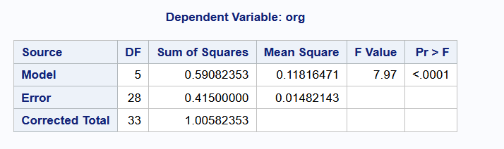
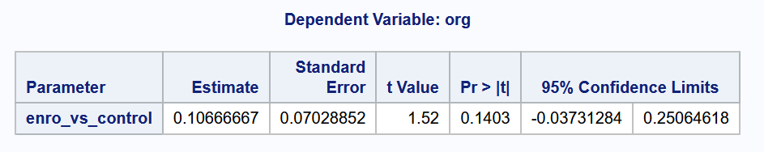
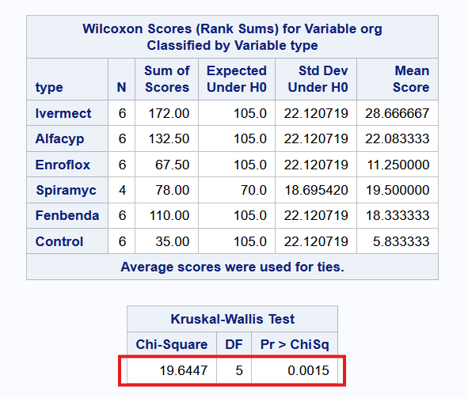

8 ANOVA
8.1 Introduction
In the previous topic, we learned how to run two-sample \(t\)-tests. The objective of these procedures is to compare the means from two groups. Frequently, however, the means of more than two groups need to be compared.
In this topic, we introduce the one-way analysis of variance (ANOVA), which generalises the \(t\)-test methodology to more than 2 groups. Hypothesis tests in the ANOVA framework require the assumption of Normality. When this does not hold, we turn to the Kruskal-Wallis test - the non-parametric version, to compare distributions between groups.
While the \(F\)-test in ANOVA provides a determination of whether or not the group means are different, in practice, we would always want to follow up with specific comparisons between groups as well. This topic covers how we can construct confidence intervals in those cases as well.
Example 8.1 (Effect of Antibiotics)
The following example was taken from Ekstrøm and Sørensen (2015). An experiment with dung from heifers1 was carried out in order to explore the influence of antibiotics on the decomposition of dung organic material. As part of the experiment, 36 heifers were randomly assigned into six groups.
Antibiotics of different types were added to the feed for heifers in five of the groups. The remaining group served as a control group. For each heifer, a bag of dung was dug into the soil, and after 8 weeks the amount of organic material was measured for each bag.
Figure 8.1 contains a boxplot of the data from each group.
Compared to the control group, it does appear that the median organic weight of the dung from the other heifer groups is higher. The following table displays the mean, standard deviation, and count from each group:
type mean sd count
1 Control 2.603 0.119 6
2 Alfacyp 2.895 0.117 6
3 Enroflox 2.710 0.162 6
4 Fenbenda 2.833 0.124 6
5 Ivermect 3.002 0.109 6
6 Spiramyc 2.855 0.054 4Observe that the Spiramycin group only yielded 4 readings instead of 6. Our goal in this topic is to apply a technique for assessing if group means are statistically different from one another. Here are the specific analyses that we shall carry out:
- Is there any significant difference, at 5% level, between the mean decomposition level of the groups?
- At 5% level, is the mean level for Enrofloxacin different from the control group?
- Pharmacologically speaking, Ivermectin and Fenbendazole are similar to each other. Let us call this sub-group (A). They work differently than Enrofloxacin. At 5% level, is there a significant difference between the mean from sub-group A and Enrofloxacin?
8.2 One-Way Analysis of Variance
Formal Set-up
Suppose there are \(k\) groups with \(n_i\) observations in the \(i\)-th group. The \(j\)-th observation in the \(i\)-th group will be denoted by \(Y_{ij}\). In the One-Way ANOVA, we assume the following model:
\[\begin{equation} Y_{ij} = \mu + \alpha_i + e_{ij},\; i=1,\ldots,k,\; j=1,\ldots,n_i \end{equation}\]
- \(\mu\) is a constant, representing the underlying mean of all groups taken together.
- \(\alpha_i\) is a constant specific to the \(i\)-th group. It represents the difference between the mean of the \(i\)-th group and the overall mean.
- \(e_{ij}\) represents random error about the mean \(\mu + \alpha_i\) for an individual observation from the \(i\)-th group.
In terms of distributions, we assume that the \(e_{ij}\) are i.i.d from a Normal distribution with mean 0 and variance \(\sigma^2\). This leads to the model for each observation:
\[ Y_{ij} \sim N(\mu + \alpha_i,\; \sigma^2) \tag{8.1}\]
It is not possible to estimate both \(\mu\) and all the \(k\) different \(\alpha_i\)’s, since we only have \(k\) observed mean values for the \(k\) groups. For identifiability purposes, we need to constrain the parameters. There are two common constraints used, and note that different software have different defaults:
- Setting \(\sum_{i=1}^k \alpha_i = 0\), or
- Setting \(\alpha_1= 0\).
Continuing on from Equation 8.1, let us denote the mean for the \(i\)-th group as \(\overline{Y_i}\), and the overall mean of all observations as \(\overline{\overline{Y}}\). We can then write the deviation of an individual observation from the overall mean as:
\[ Y_{ij} - \overline{\overline{Y}} = \underbrace{(Y_{ij} - \overline{Y_i})}_{\text{within}} + \underbrace{(\overline{Y_i} - \overline{\overline{Y}})}_{\text{between}} \tag{8.2}\]
The first term on the right of the above equation is the source of within-group variability. The second term on the right gives rise to between-group variability. The intuition behind the ANOVA procedure is that if the between-group variability is large and the within-group variability is small, then we have evidence that the group means are different.
If we square both sides of Equation 8.2 and sum over all observations, we arrive at the following equation; the essence of ANOVA:
\[ \sum_{i=1}^k \sum_{j=1}^{n_i} \left( Y_{ij} - \overline{\overline{Y}} \right)^2 = \sum_{i=1}^k \sum_{j=1}^{n_i} \left( Y_{ij} - \overline{Y_i} \right)^2 + \sum_{i=1}^k \sum_{j=1}^{n_i} \left( \overline{Y_i} - \overline{\overline{Y}} \right)^2 \]
The squared sums above are referred to as: \[ SS_T = SS_W + SS_B \]
- \(SS_T\): Sum of Squares Total,
- \(SS_W\): Sum of Squares Within, and
- \(SS_B\): Sum of Squares Between.
In addition the following definitions are important for understanding the ANOVA output:
- The Between Mean Square: \[ MS_B = \frac{SS_B}{k-1} \]
- The Within Mean Square: \[ MS_W = \frac{SS_W}{n - k} \]
The mean squares are estimates of the variability between and within groups. The ratio of these quantities is the test statistic.
\(F\)-Test in One-Way ANOVA
The null and alternative hypotheses are:
\[\begin{eqnarray*} H_0 &:& \alpha_i = 0 \text{ for all } i \\ H_1 &:& \alpha_i \ne 0 \text{ for at least one } i \end{eqnarray*}\]
The test statistic is given by \[ F = \frac{MS_B}{MS_W} \]
Under \(H_0\), the statistic \(F\) follows an \(F\) distribution with \(k-1\) and \(n-k\) degrees of freedom.
Assumptions
These are the assumptions that will need to be validated.
- The observations are independent of each other. This is usually a characteristic of the design of the experiment, and is not something we can always check from the data.
- The errors are Normally distributed. Residuals can be calculated as follows: \[ Y_{ij} - \overline{Y_i} \] The distribution of these residuals should be checked for Normality.
- The variance within each group is the same. In ANOVA, the \(MS_W\) is a pooled estimate (across the groups) that is used; in order for this to be valid, the variance within each group should be identical. As in the 2-sample situation, we shall avoid separate hypotheses tests and proceed with the rule-of-thumb that if the ratio of the largest to smallest standard deviation is less than 2, we can proceed with the analysis.
Example 8.2 (F-test)
We being by applying the overall \(F\)-test to the heifers data, to assess if there is any significant difference between the means.
#R
heifers <- read.csv("data/antibio.csv")
u_levels <- sort(unique(heifers$type))
heifers$type <- factor(heifers$type,
levels=u_levels[c(2, 1, 3, 4, 5, 6)])
heifers_lm <- lm(org ~ type, data=heifers)
anova(heifers_lm)Analysis of Variance Table
Response: org
Df Sum Sq Mean Sq F value Pr(>F)
type 5 0.59082 0.118165 7.9726 8.953e-05 ***
Residuals 28 0.41500 0.014821
---
Signif. codes: 0 '***' 0.001 '**' 0.01 '*' 0.05 '.' 0.1 ' ' 1#Python
import pandas as pd
import numpy as np
from scipy import stats
import statsmodels.api as sm
from statsmodels.formula.api import ols
heifers = pd.read_csv("data/antibio.csv")
heifer_lm = ols('org ~ type', data=heifers).fit()
anova_tab = sm.stats.anova_lm(heifer_lm, type=3,)
print(anova_tab) df sum_sq mean_sq F PR(>F)
type 5.0 0.590824 0.118165 7.972558 0.00009
Residual 28.0 0.415000 0.014821 NaN NaN
At the 5% significance level, we reject the null hypothesis to conclude that the group means are significantly different from one another. This answers question (1) from Example 8.1.
To extract the estimated parameters, we can use the following code:
Call:
lm(formula = org ~ type, data = heifers)
Residuals:
Min 1Q Median 3Q Max
-0.29000 -0.06000 0.01833 0.07250 0.18667
Coefficients:
Estimate Std. Error t value Pr(>|t|)
(Intercept) 2.60333 0.04970 52.379 < 2e-16 ***
typeAlfacyp 0.29167 0.07029 4.150 0.000281 ***
typeEnroflox 0.10667 0.07029 1.518 0.140338
typeFenbenda 0.23000 0.07029 3.272 0.002834 **
typeIvermect 0.39833 0.07029 5.667 4.5e-06 ***
typeSpiramyc 0.25167 0.07858 3.202 0.003384 **
---
Signif. codes: 0 '***' 0.001 '**' 0.01 '*' 0.05 '.' 0.1 ' ' 1
Residual standard error: 0.1217 on 28 degrees of freedom
Multiple R-squared: 0.5874, Adjusted R-squared: 0.5137
F-statistic: 7.973 on 5 and 28 DF, p-value: 8.953e-05 OLS Regression Results
==============================================================================
Dep. Variable: org R-squared: 0.587
Model: OLS Adj. R-squared: 0.514
Method: Least Squares F-statistic: 7.973
Date: Fri, 20 Dec 2024 Prob (F-statistic): 8.95e-05
Time: 16:04:37 Log-Likelihood: 26.655
No. Observations: 34 AIC: -41.31
Df Residuals: 28 BIC: -32.15
Df Model: 5
Covariance Type: nonrobust
====================================================================================
coef std err t P>|t| [0.025 0.975]
------------------------------------------------------------------------------------
Intercept 2.8950 0.050 58.248 0.000 2.793 2.997
type[T.Control] -0.2917 0.070 -4.150 0.000 -0.436 -0.148
type[T.Enroflox] -0.1850 0.070 -2.632 0.014 -0.329 -0.041
type[T.Fenbenda] -0.0617 0.070 -0.877 0.388 -0.206 0.082
type[T.Ivermect] 0.1067 0.070 1.518 0.140 -0.037 0.251
type[T.Spiramyc] -0.0400 0.079 -0.509 0.615 -0.201 0.121
==============================================================================
Omnibus: 2.172 Durbin-Watson: 2.146
Prob(Omnibus): 0.338 Jarque-Bera (JB): 1.704
Skew: -0.545 Prob(JB): 0.427
Kurtosis: 2.876 Cond. No. 6.71
==============================================================================
Notes:
[1] Standard Errors assume that the covariance matrix of the errors is correctly specified.When estimating, both R and Python set one of the \(\alpha_i\) to be equal to 0. In the case of R, it is the coefficient for Control, since we set it as the first level in the factor. For Python, we can tell from the output that the constraint has been placed on the coefficient for Alfacyp (since it is missing).
However, all estimates are group means are identical. From the R output, we can compute that the estimate of the mean for the Alfacyp group is \[
2.603 + 0.292 = 2.895
\] From the Python output, we can read off (the Intercept term) that the estimate for Alfacyp is precisely \[
2.895 + 0 = 2.895
\]
To check the assumptions, we can use the following code:
For SAS, we have to create a new column containing the residuals in a temporary dataset before creating these plots.
8.3 Comparing specific groups
The \(F\)-test in a One-Way ANOVA indicates if all means are equal, but does not provide further insight into which particular groups differ. If we had specified beforehand that we wished to test if two particular groups \(i_1\) and \(i_2\) had different means, we could do so with a t-test. Here are the details to compute a Confidence Interval in this case:
- Compute the estimate of the difference between the two means: \[ \overline{Y_{i_1}} - \overline{Y_{i_2}} \]
- Compute the standard error of the above estimator: \[ \sqrt{MS_W \left( \frac{1}{n_{i_1}} + \frac{1}{n_{i_2}} \right) } \]
- Compute the \(100(1- \alpha)%\) confidence interval as: \[ \overline{Y_{i_1}} - \overline{Y_{i_2}} \pm t_{n-k, \alpha/2} \times \sqrt{MS_W \left( \frac{1}{n_{i_1}} + \frac{1}{n_{i_2}} \right) } \]
Important
If you notice from the output in Example 8.1, the rule-of-thumb regarding standard deviations has not been satisfied. The ratio of largest to smallest standard deviations is slightly more than 2. Hence we should in fact switch to the non-parametric version of the test; the pooled estimate of the variance may not be valid. However, we shall proceed with this dataset just to demonstrate the next few techniques, instead of introducing a new dataset.
Example 8.3 (Enrofloxacin vs. Control)
Let us attempt to answer question (2), that we had set out earlier in Example 8.1.
# R
summary_out <- anova(heifers_lm)
est_coef <- coef(heifers_lm)
est1 <- unname(est_coef[3]) # coefficient for Enrofloxacin
MSW <- summary_out$`Mean Sq`[2]
df <- summary_out$Df[2]
q1 <- qt(0.025, df, 0, lower.tail = FALSE)
lower_ci <- est1 - q1*sqrt(MSW * (1/6 + 1/6))
upper_ci <- est1 + q1*sqrt(MSW * (1/6 + 1/6))
cat("The 95% CI for the diff. between Enrofloxacin and Control is (",
format(lower_ci, digits = 3), ",",
format(upper_ci, digits = 3), ").", sep="")The 95% CI for the diff. between Enrofloxacin and Control is (-0.0373,0.251).# Python
est1 = heifer_lm.params.iloc[2] - heifer_lm.params.iloc[1]
MSW = heifer_lm.mse_resid
df = heifer_lm.df_resid
q1 = -stats.t.ppf(0.025, df)
lower_ci = est1 - q1*np.sqrt(MSW * (1/6 + 1/6))
upper_ci = est1 + q1*np.sqrt(MSW * (1/6 + 1/6))
print(f"""The 95% CI for the diff. between Enrofloxacin and control is
({lower_ci:.3f}, {upper_ci:.3f}).""") The 95% CI for the diff. between Enrofloxacin and control is
(-0.037, 0.251).In order to get SAS to generate the estimate, modify the code to include clparm in the model statement, and include the estimate statement.

As the confidence interval contains the value 0, the binary conclusion would be to not reject the null hypothesis at the 5% level.
8.4 Contrast Estimation
A more general comparison, such as the comparison of a collection of \(l_1\) groups with another collection of \(l_2\) groups, is also possible. First, note that a linear contrast is any linear combination of the individual group means such that the linear coefficients add up to 0. In other words, consider \(L\) such that
\[ L = \sum_{i=1}^k c_i \overline{Y_i}, \text{ where } \sum_{i=1}^k c_i = 0 \]
Note that the comparison of two groups in Section 8.3 is a special case of this linear contrast.
Here is the procedure for computing confidence intervals for a linear contrast:
- Compute the estimate of the contrast: \[ L = \sum_{i=1}^k c_i \overline{Y_i} \]
- Compute the standard error of the above estimator: \[ \sqrt{MS_W \sum_{i=1}^k \frac{c_i^2}{n_i} } \]
- Compute the \(100(1- \alpha)%\) confidence interval as: \[ L \pm t_{n-k, \alpha/2} \times \sqrt{MS_W \sum_{i=1}^k \frac{c_i^2}{n_i} } \]
Example 8.4 (Comparing collection of groups)
Let sub-group 1 consist of Ivermectin and Fenbendazole. Here is how we can compute a confidence interval for the difference between this sub-group, and Enrofloxacin.
c1 <- c(-1, 0.5, 0.5)
n_vals <- c(6, 6, 6)
L <- sum(c1*est_coef[3:5])
#MSW <- summary_out[[1]]$`Mean Sq`[2]
#df <- summary_out[[1]]$Df[2]
se1 <- sqrt(MSW * sum( c1^2 / n_vals ) )
q1 <- qt(0.025, df, 0, lower.tail = FALSE)
lower_ci <- L - q1*se1
upper_ci <- L + q1*se1
cat("The 95% CI for the diff. between the two groups is (",
format(lower_ci, digits = 2), ",",
format(upper_ci, digits = 2), ").", sep="")The 95% CI for the diff. between the two groups is (0.083,0.33).c1 = np.array([-1, 0.5, 0.5])
n_vals = np.array([6, 6, 6,])
L = np.sum(c1 * heifer_lm.params.iloc[2:5])
MSW = heifer_lm.mse_resid
df = heifer_lm.df_resid
q1 = -stats.t.ppf(0.025, df)
se1 = np.sqrt(MSW*np.sum(c1**2 / n_vals))
lower_ci = L - q1*se1
upper_ci = L + q1*se1
print(f"""The 95% CI for the diff. between the two groups is
({lower_ci:.3f}, {upper_ci:.3f}).""") The 95% CI for the diff. between the two groups is
(0.083, 0.332).8.5 Multiple Comparisons
The procedures in the previous two subsections correspond to contrasts that we had specified before collecting or studying the data. If, instead, we wished to perform particular comparisons after studying the group means, or if we wish to compute all pairwise contrasts, then we need to adjust for the fact that we are conducting multiple tests. If we do not do so, the chance of making at least one false positive increases greatly.
Bonferroni
The simplest method for correcting for multiple comparisons is to use the Bonferroni correction. Suppose we wish to perform \(m\) pairwise comparisons, either as a test or by computing confidence intervals. If we wish to maintain the significance level of each test at \(\alpha\), then we should perform each of the \(m\) tests/confidence intervals at \(\alpha/m\).
TukeyHSD
This procedure is known as Tukey’s Honestly Significant Difference. It is designed to construct confidence intervals for all pairwise comparisons. For the same \(\alpha\)-level, Tukey’s HSD method provides shorter confidence intervals than a Bonferroni correction for all pairwise comparisons.
Tukey multiple comparisons of means
95% family-wise confidence level
factor levels have been ordered
Fit: aov(formula = heifers_lm)
$type
diff lwr upr p adj
Enroflox-Control 0.10666667 -0.10812638 0.3214597 0.6563131
Fenbenda-Control 0.23000000 0.01520695 0.4447930 0.0304908
Spiramyc-Control 0.25166667 0.01152074 0.4918126 0.0358454
Alfacyp-Control 0.29166667 0.07687362 0.5064597 0.0034604
Ivermect-Control 0.39833333 0.18354028 0.6131264 0.0000612
Fenbenda-Enroflox 0.12333333 -0.09145972 0.3381264 0.5093714
Spiramyc-Enroflox 0.14500000 -0.09514593 0.3851459 0.4549043
Alfacyp-Enroflox 0.18500000 -0.02979305 0.3997930 0.1225956
Ivermect-Enroflox 0.29166667 0.07687362 0.5064597 0.0034604
Spiramyc-Fenbenda 0.02166667 -0.21847926 0.2618126 0.9997587
Alfacyp-Fenbenda 0.06166667 -0.15312638 0.2764597 0.9488454
Ivermect-Fenbenda 0.16833333 -0.04645972 0.3831264 0.1923280
Alfacyp-Spiramyc 0.04000000 -0.20014593 0.2801459 0.9953987
Ivermect-Spiramyc 0.14666667 -0.09347926 0.3868126 0.4424433
Ivermect-Alfacyp 0.10666667 -0.10812638 0.3214597 0.6563131import statsmodels.stats.multicomp as mc
cp = mc.MultiComparison(heifers.org, heifers.type)
tk = cp.tukeyhsd()
print(tk) Multiple Comparison of Means - Tukey HSD, FWER=0.05
========================================================
group1 group2 meandiff p-adj lower upper reject
--------------------------------------------------------
Alfacyp Control -0.2917 0.0035 -0.5065 -0.0769 True
Alfacyp Enroflox -0.185 0.1226 -0.3998 0.0298 False
Alfacyp Fenbenda -0.0617 0.9488 -0.2765 0.1531 False
Alfacyp Ivermect 0.1067 0.6563 -0.1081 0.3215 False
Alfacyp Spiramyc -0.04 0.9954 -0.2801 0.2001 False
Control Enroflox 0.1067 0.6563 -0.1081 0.3215 False
Control Fenbenda 0.23 0.0305 0.0152 0.4448 True
Control Ivermect 0.3983 0.0001 0.1835 0.6131 True
Control Spiramyc 0.2517 0.0358 0.0115 0.4918 True
Enroflox Fenbenda 0.1233 0.5094 -0.0915 0.3381 False
Enroflox Ivermect 0.2917 0.0035 0.0769 0.5065 True
Enroflox Spiramyc 0.145 0.4549 -0.0951 0.3851 False
Fenbenda Ivermect 0.1683 0.1923 -0.0465 0.3831 False
Fenbenda Spiramyc 0.0217 0.9998 -0.2185 0.2618 False
Ivermect Spiramyc -0.1467 0.4424 -0.3868 0.0935 False
--------------------------------------------------------8.6 Kruskal-Wallis Procedure
If the assumptions of the ANOVA procedure are not met, we can turn to a non-parametric version - the Kruskal Wallis test. This latter procedure is a generalisation of the Wilcoxon Rank-Sum test for 2 independent samples.
Formal Set-up
The test statistic compares the average ranks in the individual groups. If these are close together, we would be inclined to conclude the treatments are equally effective.
The null hypothesis is that all groups follow the same distribution. The alternative hypothesis is that at least one of the groups’ distribution differs from another by a location shift. We then proceed with:
Pool the observations over all samples, thus constructing a combined sample of size \(N = \sum n_i\). Assign ranks to individual observations, using average rank in the case of tied observations. Compute the rank sum \(R_i\) for each of the \(k\) samples.
If there are no ties, compute the test statistic as \[ H = \frac{12}{N(N+1)} \sum_{i=1}^k \frac{R_i^2}{n_i} - 3(N+1) \]
If there are ties, compute the test statistic as \[ H^* = \frac{H}{1 - \frac{\sum_{j=1}^g (t^3_j - t_j)}{N^3 - N}} \]
where \(t_j\) refers to the number of observations with the same value in the \(j\)-th cluster of tied observations and \(g\) is the number of tied groups.
Under \(H_0\), the test statistic follows a \(\chi^2\) distribution with \(k-1\) degrees of freedom.
Important
This test should only be used if \(n_i \ge 5\) for all groups.
Example 8.5 (Kruskal-Wallis Test)
Here is the code and output from running the Kruskal-Wallis test in the three software.

8.7 Summary
The purpose of this topic is to introduce you to the one-way ANOVA model. While there are restrictive distributional assumptions that it entails, I once again urge you to look past, at the information the method conveys. It attempts to compare the within-group variance to the between-group variance. Try to avoid viewing statistical procedures as flowcharts. If an assumption does not hold, or a p-value is borderline significant, try to investigate further on how sensitive the result is to those assumptions.
Our job as analysts does not end after reporting the p-value from the \(F\)-test. We should try to dig deeper to uncover which groups are the ones that are different from the rest.
Finally, take note that we should specify the contrasts we wish to test/estimate upfront, even before collecting the data. Only the Tukey comparison method (HSD) is valid if we perform multiple comparisons after inspecting the data.
Most of the theoretical portions in this topic were taken from the textbook Rosner (2015).
8.8 References
Website References
- Welch’s ANOVA This website discusses an alternative test when the equal variance assumption has not been satisfied. It is for information only; it will not be tested.
- scipy stats This website contains documentation on the distribution-related functions that we might need from scipy stats, e.g. retrieving quantiles.
- Contrast coding
- Type I,II,III SS
A heifer is a young, female cow that has not had her first calf yet.↩︎